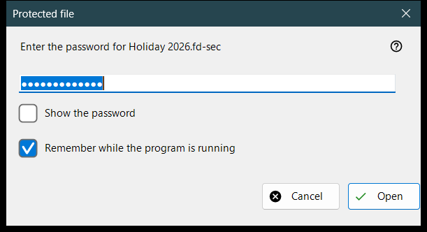
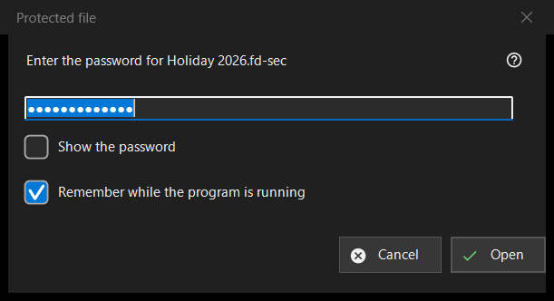

Protected file
What this is for
Asks for the password of a protected container, a .fd-sec file, when it comes on screen. It opens when you press Enter or click the locked file, and by itself once you stop on such a file; a slideshow skips protected files and counts them. The content is shown from memory: nothing decrypted is written to disk. Modern viewer only.


In this order
- Type the password; it is masked.
- Tick «Remember while the program is running» if other containers use the same password.
- Press «Open» (Enter).
- «Cancel» (Esc) leaves the file locked.
The elements
The password
The prompt names the file. «Show the password» is off at the start. The password is used exactly as typed and checked off the main thread, so the viewer stays responsive while the slow key derivation runs; it is never written to the registry, to a file or to the Windows store.
Remember while the program is running
Ticked by default. It keeps the password in memory until the program closes, and only after a container has actually opened with it; the viewer then tries it silently on the next containers and asks only when it does not fit.
A refusal and an empty password
After a failed attempt the window comes back with «It did not open: the password may be wrong, the file may never have been a container, or it may have been altered.» These cases look the same on purpose: a wrong key and a changed byte cannot be told apart. A damaged or unsupported container gets its own message and no password window. An empty password is accepted, but the first Enter shows «An empty password is not protection: such a file is merely hidden from a casual look. Press again to open it.» and the second press opens the file.
Cancel
Cancel, Esc and the close box are one path and change nothing. The file shows «A password is needed - press Enter or click the file», and the viewer does not ask again for it while that folder stays open. Enter or a click on the file asks again.